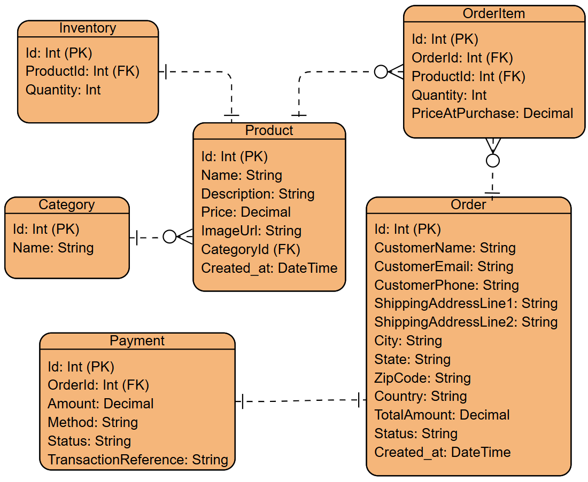
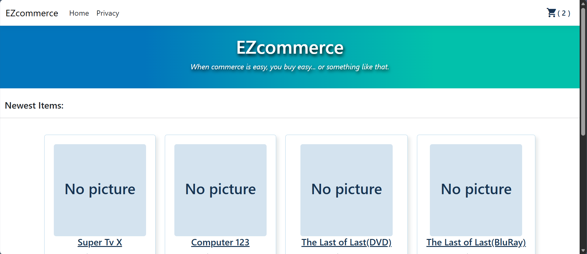
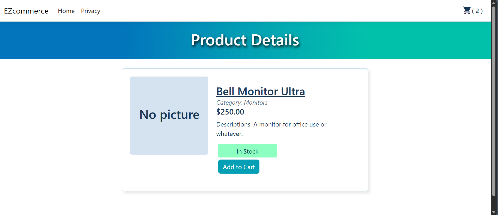
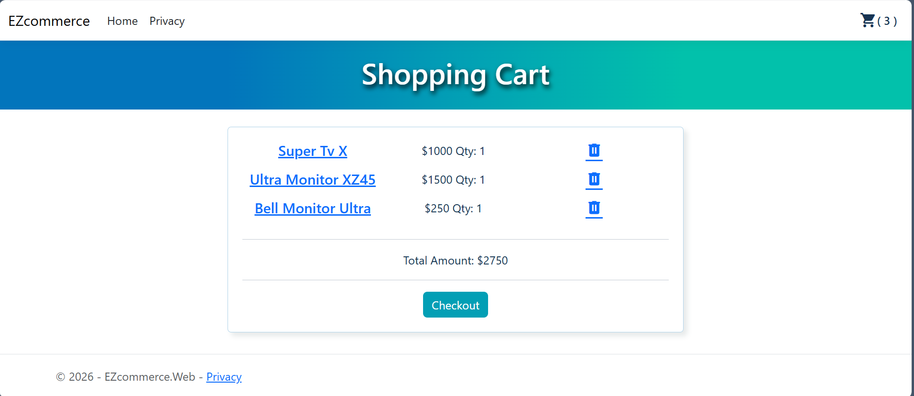
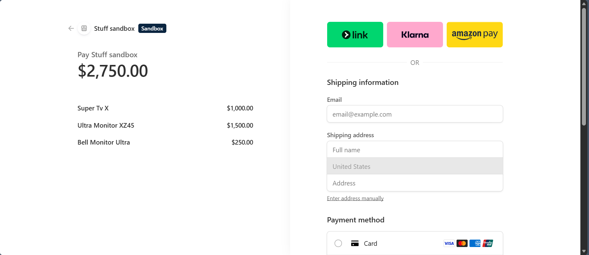

A full-stack ecommerce platform with secure payments and admin management tools.
Better understanding on how ecommerce websites works (database schema, payment processing, status updates, etc.).
ASP.NET Core MVC, Microsoft SQL Server, Entity Framework Core, Stripe API
I occasionally make online purchases on Amazon and I sometimes wonder, how does it all work? How do payments get processed? How do they maintain a shopping cart across pages? It is these question that lead me to building a basic ecommerce website to understand a bit about what is happening under the hood. Most of this blog will center around e-commerce related features that I implemented and what I learned in the process.
Below is the database schema I used. I made the choice of having login capability only for administrative purposes which is why an Order table stores all the user specific information.

Database ER Diagram
The core feature used to store a shopping cart was a Session. Sessions are temporary user data stored on the server. It is used to persist data across http requests. To use Sessions in ASP.NET Core, there is some setup that must be added in the Program.cs file. After that, you can Use the HttpContext or pass an instance of the httpContextAccessor to access the session. Items in the session are store in key value pairs so with that you can set/get values. I should also mention that Session in httpContext are by default unique per user.
//Program.cs, Setup
builder.Services.AddSession(options =>
{
options.IdleTimeout = TimeSpan.FromMinutes(10);
options.Cookie.HttpOnly = true;
options.Cookie.IsEssential = true;
});
builder.Services.AddSingleton<IHttpContextAccessor, HttpContextAccessor>();
builder.Services.AddScoped<ICartService, CartService>();
…
// Before routing and Endpoints.
app.UseSession();
// CartService.cs, Snippets of how to use
// top setup
private readonly IHttpContextAccessor _httpContextAccessor;
private readonly string CartKey = "Cart";
public CartService(IHttpContextAccessor httpContextAccessor)
{
_httpContextAccessor = httpContextAccessor;
}
private ISession Session => _httpContextAccessor.HttpContext!.Session;
…
// Example session function used in CartService
Session.SetString(CartKey, JsonSerializer.Serialize(cart));
JsonSerializer.Deserialize<List<CartItem>>(value) ?? new List<CartItem>();
Session.Remove(CartKey);
When It comes to payment processing, I decided to use the Stripe API and Stripe hosted payment page. Note that there is an Stripe SDK package that I used. Called "Stripe.net".
After the setup, using the API was pretty simple with just needing to setup a stripe client and then calling the line of code to make a session.
This is the basic flow on Payment Processing:
// CheckoutService.cs, example create Session Section
_client = new StripeClient(_stripeSettings.SecretKey);
var metaData = new Dictionary
{
{"orderId", orderId}
};
var options = new SessionCreateOptions
{
BillingAddressCollection = "required",
ShippingAddressCollection = new SessionShippingAddressCollectionOptions
{
AllowedCountries = new List<string> { "US"},
},
ExpiresAt = DateTime.UtcNow.AddMinutes(30),
Mode = "payment",
SuccessUrl = "http://localhost:5191/Checkout/Success",
CancelUrl = "http://localhost:5191/Checkout/Cancel",
Metadata = metaData,
LineItems = sessionItems
};
Session session = await _client.V1.Checkout.Sessions.CreateAsync(options);
// Access url with session.Url
Webhooks are a way for an application to send information to another application of a certain event taking place. In an ecommerce website it is useful for handling the events around a transaction after it has been started. For example if it completes or fails, and dealing with Order/Payment records around that. Somethings to keep in mind is that webhooks are just endpoints, like an API. They typically will have security measures in place like signing using a secret keys to verify the contents. Stripe also provides some utility function event construction.
// Webhook function example
[HttpPost]
public async Task<IActionResult> Handle()
{
var json = await new StreamReader(HttpContext.Request.Body).ReadToEndAsync();
Event stripeEvent;
try
{
stripeEvent = EventUtility.ConstructEvent(
json,
Request.Headers["Stripe-Signature"],
_stripeSettings.WebhookSecret
);
}
catch (Exception ex)
{
return BadRequest();
}
if (stripeEvent.Type == EventTypes.CheckoutSessionCompleted)
{
var session = stripeEvent.Data.Object as Session;
// use session to get data
}
// can add more event handling types
}
Return Ok();
}
When it comes to transactions, one must consider when should Payments/Orders be recorded and inventory reservation be handled. The simplest approach would be to do it all when the "session_checkout_success" webhook event is received. The issue with this approach is that it doesn’t handle inventory reservation on initiating transaction so there is a risk of concurrent transaction causing the inventory to go below 0 then they complete. Also cart Items will need to be stored in the Stripe session and checked twice (when session created and in webhook). I instead created the Order/OrderItems (marked Status as processing) and decreased inventory when session is created. Then when the transaction completed, I created the Payment and updated the Order Status. With the Order being tracked, I could also handle transaction failure event and roll back inventories since the OrderItems also store the quantities.




I would say even though my project was a bit simple, I did learn a lot about ecommerce websites. I was surprised to find that many of the core technologies (Stripe API, Sessions) were easy to use and setup. The more challenging parts came in the detailed design decision that needed to be made along the way, like managing Inventory changes, and creating records of transaction in certain times. I also spent a decent amount of time planning the whole project and I felt like it resulted in a more consistent work flow. I was able to quickly move from one feature to another when I laid out most task.
Back to Projects